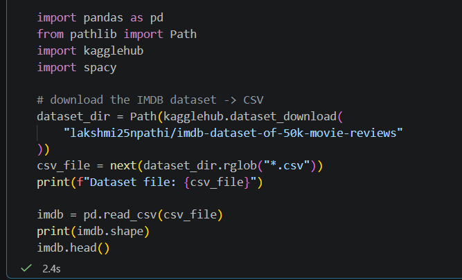
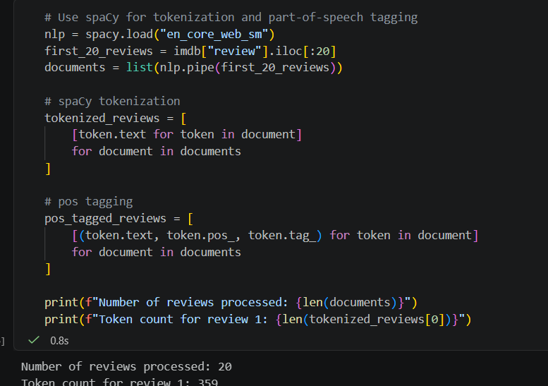
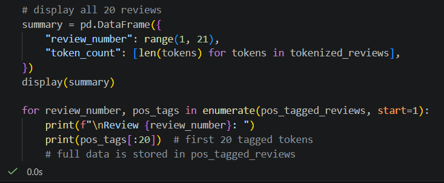
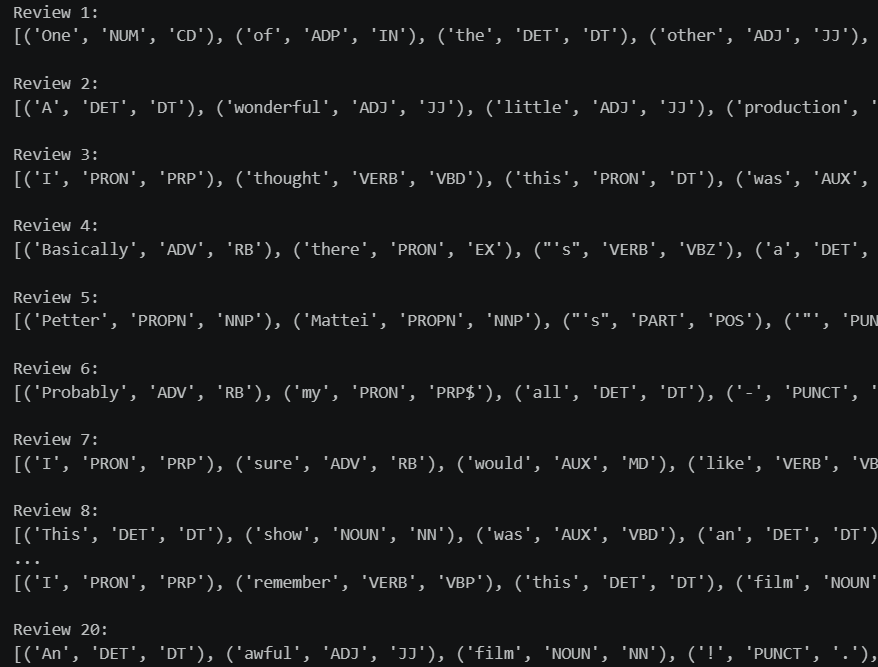

From movie reviews to data
Haru · Marcus · Sashe
What did spaCy find when we processed the first 20 IMDB reviews?
What went in?
We used the first 20 rows of the IMDB CSV. Here is the sample at a glance:
| Measure | Result | What it tells us |
|---|---|---|
| Rows processed | 20 | Small sample for the lab |
| Sentiment labels | 10 positive · 10 negative | Even split in these rows |
| Full dataset | 50,000 reviews | Much larger than our sample |
spaCy’s nlp.pipe processed the reviews together.
Getting the reviews

- KaggleHub downloads the IMDB dataset.
- pandas reads the CSV into a table.
shapeandhead()let us check the data.
A review becomes pieces
Example from the first review:
One
of
the
other
reviewers
…
Review 1 alone produced 359 tokens. Punctuation counts as tokens too.
Token count for review 1: 359
These are the key summary lines printed by the notebook.
How spaCy produces the results

iloc[:20]selects the first 20 reviews.nlp.pipeprocesses them with the English model.- Each token keeps its text, general PoS label, and detailed tag.
Tokens in each review
These are the token counts produced for all 20 reviews.
| Index | Review number | Token count |
|---|---|---|
| 0 | 1 | 359 |
| 1 | 2 | 191 |
| 2 | 3 | 193 |
| 3 | 4 | 154 |
| 4 | 5 | 257 |
| 5 | 6 | 149 |
| 6 | 7 | 171 |
| 7 | 8 | 200 |
| 8 | 9 | 153 |
| 9 | 10 | 38 |
| Index | Review number | Token count |
|---|---|---|
| 10 | 11 | 104 |
| 11 | 12 | 199 |
| 12 | 13 | 461 |
| 13 | 14 | 130 |
| 14 | 15 | 57 |
| 15 | 16 | 165 |
| 16 | 17 | 158 |
| 17 | 18 | 281 |
| 18 | 19 | 137 |
| 19 | 20 | 152 |
From processed text to tables

- A pandas table shows each review number and token count.
- The loop prints the first 20 tagged tokens per review.
- The full tagged reviews remain in
pos_tagged_reviews.
A quick range check
Reviews are not all the same length.
The first review, at 359 tokens, is much longer than the shortest one. Longer reviews give the computer more text to analyze.
| Length measure | Tokens |
|---|---|
| Shortest review | 38 |
| Average review | 185.4 |
| Review 1 | 359 |
| Longest review | 461 |
Words get grammar labels
Example from review 1
Most frequent labels across all 20 reviews
| Label | Count |
|---|---|
| NOUN | 608 |
| PUNCT | 409 |
| VERB | 366 |
Counts include all spaCy tokens from all 20 reviews.
What the word tags look like
This screenshot shows the words with their spaCy part-of-speech labels and detailed tags.

The tuples show each token, its general part-of-speech label, and its detailed tag.
Useful first step, not the final answer
This prepares text for analysis. It does not by itself understand the review or predict its sentiment.
A next experiment could compare word or grammar patterns in positive and negative reviews.